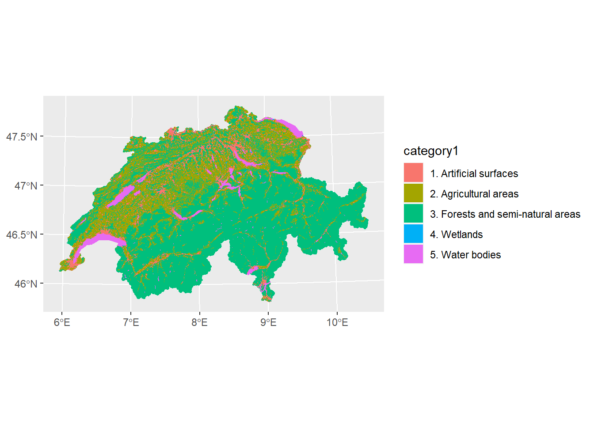
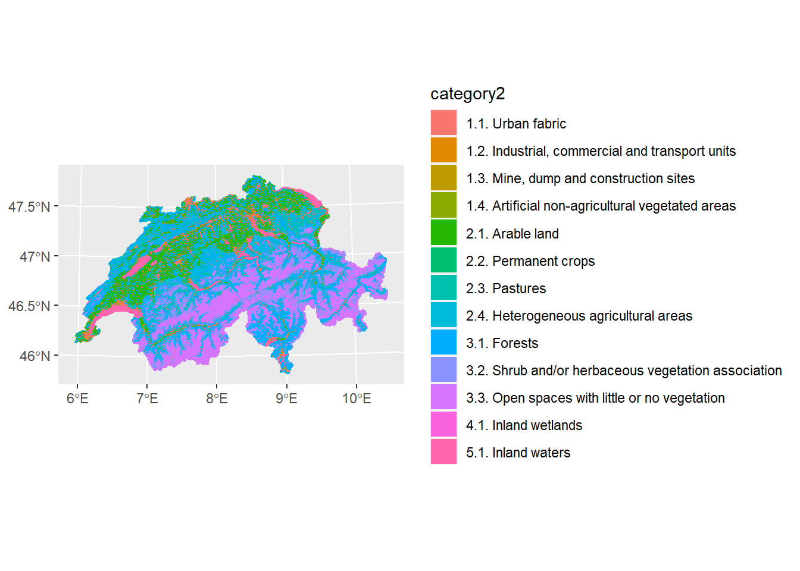

Chapter 2 Corine Land Cover
There is only one layer available:
## Driver: GPKG
## Available layers:
## layer_name geometry_type features fields
## 1 CLC_CH_2018 Polygon 17484 10What columns / fields do these layers have?
## [1] "fid" "geom" "OBJECTID" "ID" "CODE_18"
## [6] "Area_ha" "Remark" "Shape_Leng" "Shape_Area" "category1"
## [11] "category2" "text"dbGetQuery(conn_corine, "SELECT DISTINCT CODE_18, category1, category2, text FROM CLC_CH_2018 GROUP BY CODE_18, category1, category2, text") %>%
kable()| CODE_18 | category1 | category2 | text |
|---|---|---|---|
| 111 |
|
1.1. Urban fabric | Continuous urban fabric |
| 112 |
|
1.1. Urban fabric | Discontinuous urban fabric |
| 121 |
|
1.2. Industrial, commercial and transport units | Industrial or commercial units |
| 122 |
|
1.2. Industrial, commercial and transport units | Road and rail networks and associated land |
| 123 |
|
1.2. Industrial, commercial and transport units | Port areas |
| 124 |
|
1.2. Industrial, commercial and transport units | Airports |
| 131 |
|
1.3. Mine, dump and construction sites | Mineral extraction sites |
| 132 |
|
1.3. Mine, dump and construction sites | Dump sites |
| 133 |
|
1.3. Mine, dump and construction sites | Construction sites |
| 141 |
|
1.4. Artificial non-agricultural vegetated areas | Green urban areas |
| 142 |
|
1.4. Artificial non-agricultural vegetated areas | Sport and leisure facilities |
| 211 |
|
2.1. Arable land | Non-irrigated arable land |
| 221 |
|
2.2. Permanent crops | Vineyards |
| 222 |
|
2.2. Permanent crops | Fruit trees and berry plantations |
| 231 |
|
2.3. Pastures | Pastures |
| 242 |
|
2.4. Heterogeneous agricultural areas | Complex cultivation patterns |
| 243 |
|
2.4. Heterogeneous agricultural areas | Land principally occupied by agriculture, with significant areas of |
| 311 |
|
3.1. Forests | Broad-leaved forest |
| 312 |
|
3.1. Forests | Coniferous forest |
| 313 |
|
3.1. Forests | Mixed forest |
| 321 |
|
3.2. Shrub and/or herbaceous vegetation association | Natural grassland |
| 322 |
|
3.2. Shrub and/or herbaceous vegetation association | Moors and heathland |
| 324 |
|
3.2. Shrub and/or herbaceous vegetation association | Transitional woodland shrub |
| 331 |
|
3.3. Open spaces with little or no vegetation | Beaches, dunes, and sand plains |
| 332 |
|
3.3. Open spaces with little or no vegetation | Bare rock |
| 333 |
|
3.3. Open spaces with little or no vegetation | Sparsely vegetated areas |
| 334 |
|
3.3. Open spaces with little or no vegetation | Burnt area |
| 334 |
|
3.3. Open spaces with little or no vegetation | Burnt areas |
| 335 |
|
3.3. Open spaces with little or no vegetation | Glaciers and perpetual snow plains |
| 411 |
|
4.1. Inland wetlands | Inland marshes |
| 412 |
|
4.1. Inland wetlands | Peatbogs |
| 511 |
|
5.1. Inland waters | Water courses |
| 512 |
|
5.1. Inland waters | Water bodies |
What other tables are available in this Geopackage / SQLite Database?
## [1] "CLC_CH_2018" "gpkg_contents"
## [3] "gpkg_extensions" "gpkg_geometry_columns"
## [5] "gpkg_metadata" "gpkg_metadata_reference"
## [7] "gpkg_ogr_contents" "gpkg_spatial_ref_sys"
## [9] "gpkg_tile_matrix" "gpkg_tile_matrix_set"
## [11] "rtree_CLC_CH_2018_geom" "rtree_CLC_CH_2018_geom_node"
## [13] "rtree_CLC_CH_2018_geom_parent" "rtree_CLC_CH_2018_geom_rowid"
## [15] "sqlite_sequence"
